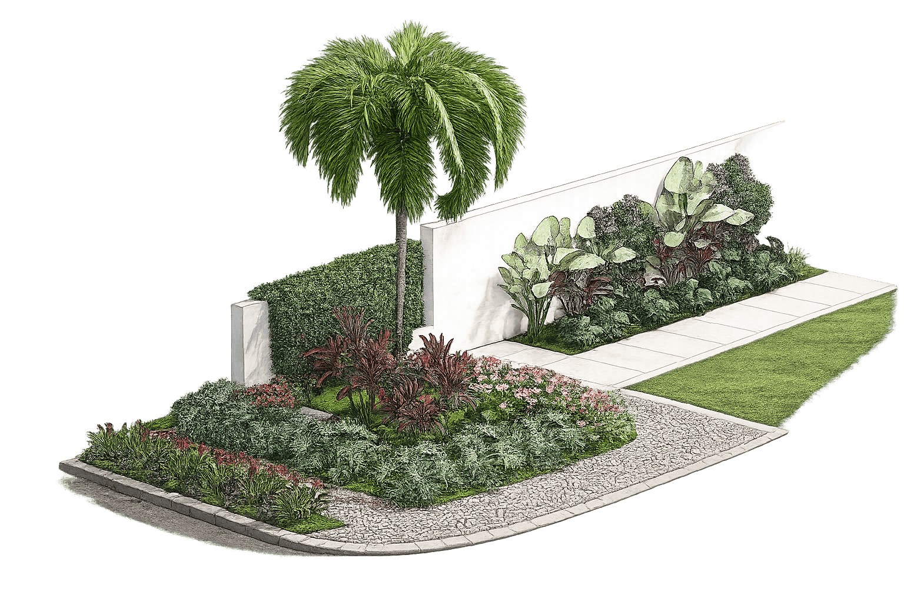
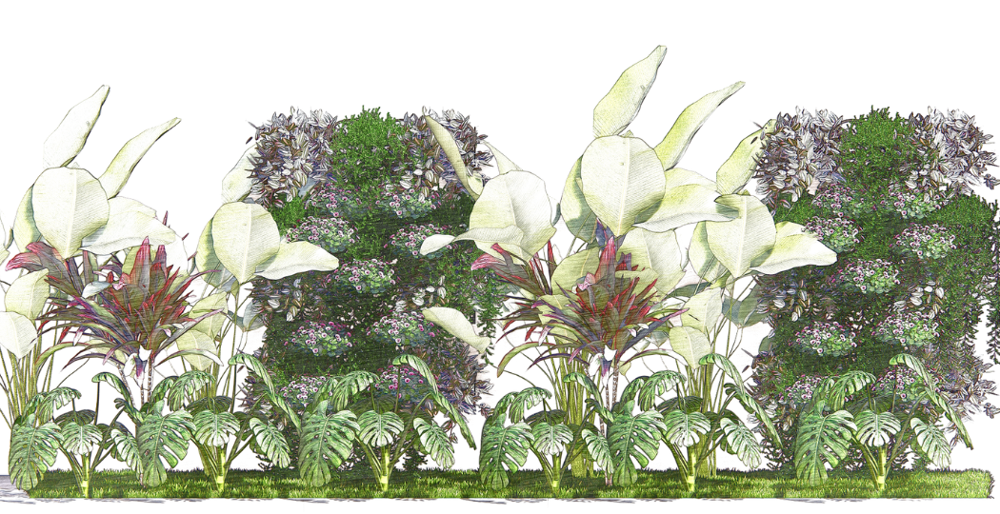
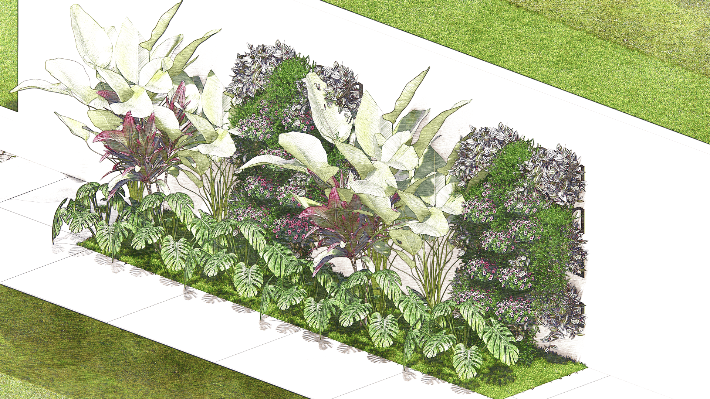
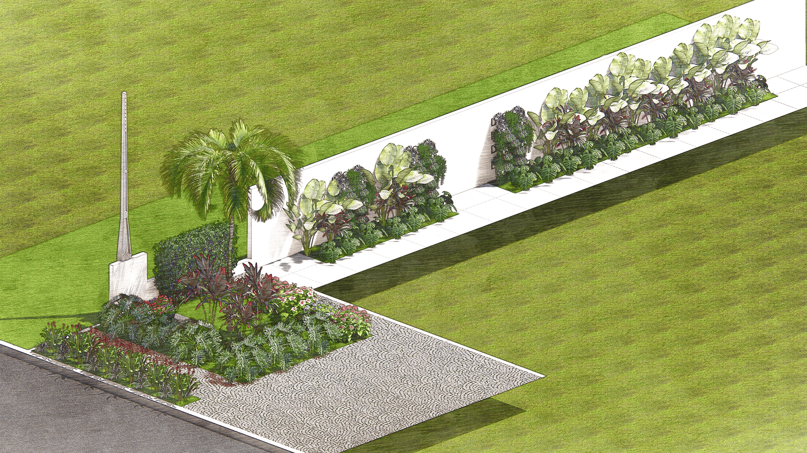
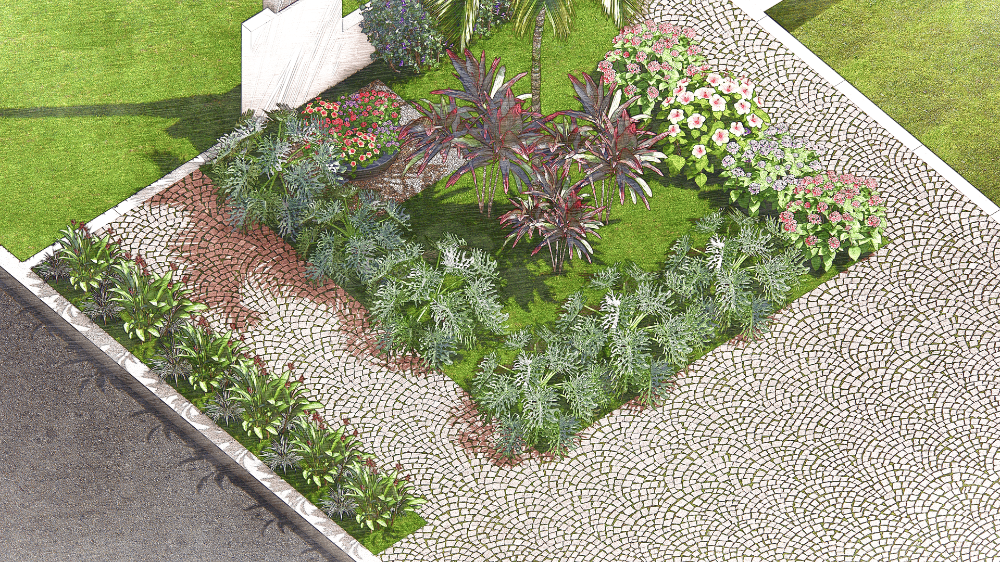

Uma conversa para conhecer as preferências da sua família e o jeito que vocês querem viver o jardim. É aqui que identificamos o que é viável para o local e alinhamos expectativas desde o primeiro dia.
Verde, sombra e vida. Projeto e execução em uma solução única: você recebe o seu jardim tropical pronto, sem se preocupar com nada no caminho.

A Gardenia acredita que cada jardim conta uma história. Por isso unimos técnica e sensibilidade para criar espaços verdes que servem a quem vive neles, pensados para o dia a dia das pessoas e bonitos por natureza.
Cada residência tem seu ritmo. Escutamos antes de desenhar, e desenhamos antes de plantar.
Pensamos no jardim que você terá daqui a um ano, dois, cinco. Beleza que cresce com o tempo.
Experiência em paisagismo sustentável construída em Londres, aplicada com o conhecimento de quem entende o clima e as plantas de Pirassununga.

Uma linguagem que traduz a exuberância do jardim tropical em serenidade. Folhagens densas, texturas variadas e camadas de verde que criam profundidade e acolhimento.
A composição reúne espécies de pequeno a médio porte, escolhidas com critério técnico e sensibilidade estética após a aprovação do projeto. Assim, cada planta faz sentido para cada ponto do espaço.
O resultado: um jardim que parece que sempre esteve ali.
Folhagens em alturas variadas que criam profundidade e movimento, como um jardim que respira.
Plantas selecionadas uma a uma para criar uma composição densa, rica e envolvente.
Composição pensada para a arquitetura e o ritmo da sua residência, não um jardim genérico.
Um jardim tropical não fica pronto no dia da entrega. Ele fica melhor a cada estação.



Um processo único em quatro fases, transparente do primeiro papo à entrega do jardim pronto. O projeto não é um custo à parte: é a garantia técnica de que cada detalhe vai funcionar no seu espaço.
Uma conversa para conhecer as preferências da sua família e o jeito que vocês querem viver o jardim. É aqui que identificamos o que é viável para o local e alinhamos expectativas desde o primeiro dia.
Uma visita técnica aprofundada para mapear o espaço de verdade. É esse estudo que garante um jardim sustentável, que vinga e fica mais bonito a cada estação.
Medição completa da área e mapeamento de cada canto do espaço.
Qualidade e acidez da terra, com definição do preparo ou substituição necessária.
Orientação da casa e incidência de sol nas diferentes épocas do ano.
Pesquisa do estilo do jardim e levantamento das plantas certas para o local e as estações.
Apresentamos a proposta visual do seu jardim e ajustamos até você aprovar. Junto, você recebe a estimativa de custo das plantas, com total transparência.
O jardim visto de cima e em 3D realista: cada espécie e elemento no lugar, antes de plantar.
Refinamentos no projeto até ele refletir exatamente o que você quer.
Definição das plantas ideais para cada ponto, conforme solo, sol e estilo aprovado.
Cotação na nossa rede de fornecedores, com os melhores custos direto para você.
Projeto aprovado, mãos na terra. A equipe executa fielmente o que você aprovou, do preparo do solo à última muda. Você recebe o jardim pronto, com a área limpa e todas as orientações de cuidado.
Terra adubada e canteiros preparados para receber cada espécie da forma certa.
Curadoria das mudas direto no fornecedor e instalação das estruturas do projeto.
Cada planta no ponto exato do anteprojeto, compondo o jardim camada por camada.
Área limpa, acabamento final e orientações de rega e cuidado nos primeiros dias.
Um valor único que engloba o projeto completo e toda a mão de obra de implantação. Você não paga duas coisas separadas: contrata o jardim pronto.
As plantas são orçadas à parte, junto com você, após a aprovação do projeto: os valores variam conforme as espécies escolhidas e a época do ano. Cotamos tudo na nossa rede de fornecedores para garantir o melhor custo.